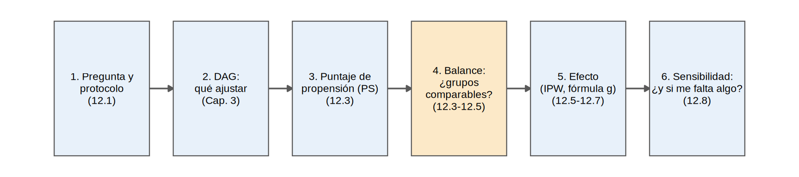
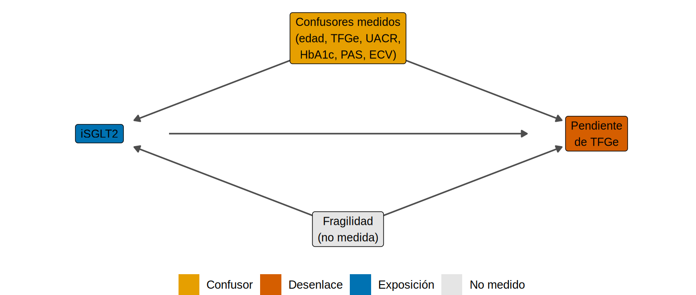
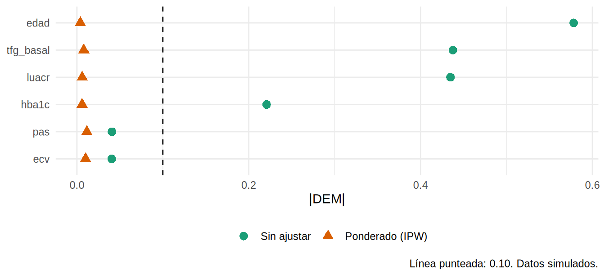

Capítulo 12: Análisis inferencial en estudios observacionales
“Un estudio observacional bien hecho es el intento de emular un ensayo aleatorizado que no se hizo.” Este capítulo reúne el corazón del libro: cómo pasar de una comparación confundida (tratados vs. no tratados) a una estimación causal plausible, con las herramientas modernas (ensayo objetivo, puntaje de propensión, emparejamiento, ponderación, estandarización y estimadores doblemente robustos), y cómo saber qué tan lejos podemos estar de la verdad.
Nota🩺 El problema de todos los días
No hay un ECA que responda si el iSGLT2 enlentece la pérdida de TFGe en tus pacientes (ERC G3-G4, albuminuria y diabetes). Tienes una base de 5 000 pacientes atendidos en tu clínica (simulados), de los cuales 2 350 recibieron el fármaco. Los tratados tienen más albuminuria, mejor TFGe y son más jóvenes. ¿Cómo estimas el efecto causal del fármaco con estos datos, y cuánto puedes confiar en el resultado?
Seguimos con la base ckd_isglt2 (simulada, Cap. 3). Conocemos la verdad: el efecto causal promedio es de +0.93 mL/min/1.73 m²/año en la pendiente de TFGe y un HR de 0.70 para el evento renal. También sabemos que hay una confusión no medida escondida (la fragilidad). Cada método se juzgará contra esa verdad.
Al finalizar este capítulo podrás:
- Emular un ensayo objetivo: definir elegibilidad, estrategias, tiempo cero, desenlace y contraste.
- Estimar y diagnosticar un puntaje de propensión (solapamiento, balance).
- Aplicar emparejamiento (
MatchIt), ponderación (IPW; ATE, ATT, ATU) y estandarización (fórmula g). - Usar un estimador doblemente robusto (AIPW) y estimar efectos con desenlaces de supervivencia.
- Evaluar la robustez de un resultado (E-value, controles negativos) y diseñar con comparador activo.
El recorrido completo en una página
Antes de entrar al detalle, juguemos la partida entera una vez, rápido. Cada paso se explica con calma en un subcapítulo; aquí solo ves cómo encajan.
Paso 1. La pregunta
En adultos con ERC G3-G4 y diabetes, ¿iniciar un iSGLT2 enlentece la pérdida anual de TFGe, comparado con no iniciarlo? Es la pregunta de un ensayo que no existe; escribimos su protocolo (12.1) y lo emulamos con el registro.
Paso 2. El DAG: qué ajustar
Dibuja lo que crees que causa qué. Los confusores medidos (edad, TFGe, albuminuria, HbA1c, PAS, ECV) influyen en quién recibe el fármaco y en cómo evoluciona la TFGe. La fragilidad hace lo mismo, pero no se mide.
nodos <- tribble(~nombre, ~x, ~y, ~etiqueta, ~rol,
"C", 2, 2, "Confusores medidos\n(edad, TFGe, UACR,\nHbA1c, PAS, ECV)", "confusor",
"A", 1, 1, "iSGLT2", "exposicion",
"Y", 3, 1, "Pendiente\nde TFGe", "desenlace",
"F", 2, 0, "Fragilidad\n(no medida)", "no medido")
aristas <- tribble(~de, ~a, "C", "A", "C", "Y", "A", "Y", "F", "A", "F", "Y")
dibujar_dag(nodos, aristas, tam_texto = 3.3, expandir = c(0.2, 0.2))
Ajustando por los confusores medidos cerramos las “puertas traseras” que podemos ver. La puerta de la fragilidad queda abierta: lo recordaremos al final.
Paso 3. El puntaje de propensión (PS)
El PS es la probabilidad de recibir el fármaco dado el perfil del paciente. Con él, dos pacientes con el mismo PS son “gemelos clínicos” respecto a la decisión de prescribir (12.3).
ps_fit <- glm(as.formula(paste("isglt2 ~", confusores_medidos)), data = ckd, family = binomial)
ckd$ps <- fitted(ps_fit)
ckd$w <- ifelse(ckd$isglt2 == 1, 1 / ckd$ps, 1 / (1 - ckd$ps)) # pesos IPW (ATE): 1 / probabilidad de su tratamientoPaso 4. El balance: ¿los grupos ya son comparables?
Antes de mirar el desenlace, comprobamos si los pesos equilibraron los confusores medidos (|DEM| < 0.10).

Qué vemos: antes de ponderar, la edad, la TFGe y la albuminuria estaban claramente desbalanceadas (|DEM| de 0.58, 0.44 y 0.43). Después, la mayor |DEM| es de solo 0.012: balance excelente.
Paso 5. El efecto
Con grupos comparables, el efecto es una regresión ponderada simple (errores robustos):
crudo <- coef(lm(pendiente_tfg ~ isglt2, ckd))["isglt2"]
fit_ipw <- lm(pendiente_tfg ~ isglt2, data = ckd, weights = w)
ct <- coeftest(fit_ipw, vcov = vcovHC(fit_ipw, "HC1"))["isglt2", ]
verdad <- mean(oraculo$ite)
c(crudo = unname(crudo), IPW = unname(ct[1]), error_estandar = unname(ct[2]), verdad = verdad) |> round(2) crudo IPW error_estandar verdad
1.50 1.34 0.05 0.93 Qué vemos: el crudo decía 1.5; el IPW dice 1.34 (IC 1.25 a 1.44). Algo mejor, pero la verdad es 0.93. A pesar de un balance perfecto, el resultado sigue 45 % por encima.
Paso 6. La sensibilidad: ¿y si me falta algo?
El PS solo equilibra lo medido. ¿Qué tan fuerte tendría que ser un confusor no medido para anular el efecto? Lo responde el E-value (12.8), aquí con el RR ponderado del evento renal a 36 meses:
riesgo <- ckd |> group_by(isglt2) |> summarise(r = weighted.mean(evento, w))
rr <- riesgo$r[2] / riesgo$r[1]
c(RR_ponderado = rr, e_value(rr)$e_value_punto) |> round(2)RR_ponderado
0.57 2.89 Qué vemos: el RR ponderado es 0.57; un confusor no medido tendría que asociarse con un RR de 2.9 con el tratamiento y con el desenlace para explicarlo todo. Eso es más de lo que pesa la albuminuria, el confusor medido más fuerte. Aun así no es cero: algo como la fragilidad sí infló el resultado.
La moraleja de la partida
- El ajuste acercó el estimado a la verdad (de 1.5 a 1.34), pero no la alcanzó.
- Un balance perfecto no prueba que no haya confusión: solo prueba que lo medido está equilibrado.
- Por eso el capítulo tiene dos mitades: cómo estimar bien (12.1-12.7) y cómo juzgar lo que no puedes ver (12.8-12.9).
Tip💡 ¿Y si no tengo buenos confusores medidos?
Este capítulo se apoya en ajustar por confusores medidos. Si sospechas que el confusor clave no se mide, hay otros diseños no aleatorizados que usan variación natural: diferencias en diferencias y series de tiempo interrumpidas (Cap. 15), regresión discontinua y variables instrumentales (Cap. 19).
Importante🎯 Mapa del capítulo
| Subcapítulo | Nivel | Resuelve |
|---|---|---|
| 12.1 Ensayo objetivo | 🟡 | Protocolo, tiempo cero, elegibilidad |
| 12.2 Regresión vs. estratificación | 🟡 | Ajuste clásico y positividad |
| 12.3 Puntaje de propensión | 🟡 | Modelo, solapamiento, balance, recorte |
| 12.4 Emparejamiento | 🟡 |
MatchIt, ATT, calibrador |
| 12.5 Ponderación (IPW) | 🟡 | ATE/ATT/ATU, pesos extremos y estabilizados |
| 12.6 Fórmula g y AIPW | 🔴 | Estandarización, doble robustez |
| 12.7 Desenlaces de supervivencia | 🔴 | KM y Cox ponderados, riesgos a t |
| 12.8 Análisis de sensibilidad | 🔴 | E-value, proxies, controles negativos |
| 12.9 Comparador activo y nuevo usuario | 🔴 | Diseño para reducir la confusión por indicación |
Prerrequisitos: Caps. 3, 8, 9, 10. Prepara: Caps. 13, 18, 19.
Para leer más
- Barrett M, D’Agostino McGowan L, Gerke T. Causal Inference in R. https://www.r-causal.org/. Lectura recomendada por el autor. Libro gratuito de inferencia causal con R; complementa 12.3-12.6.
- Karim ME. Epidemiological Methods. https://ehsanx.github.io/EpiMethods/. Lectura recomendada por el autor. El autor la sigue en sus talleres; los materiales del mismo autor sobre ponderación por puntaje de propensión están en https://ehsanx.github.io/psw/.
- Leite W. Practical Propensity Score Methods Using R. CRC Press; 2016. https://www.practicalpropensityscore.com/ (otros materiales: https://rydaro.github.io/index.html). Lectura recomendada por el autor. Guía práctica de los métodos de PS con R.
- Hernán MA, Robins JM. Using big data to emulate a target trial when a randomized trial is not available. Am J Epidemiol. 2016;183:758-764. La referencia clásica para 12.1.
- Hernán MA, Robins JM. Causal Inference: What If. Chapman & Hall/CRC (descarga gratuita). Partes II y III: modelos del PS, estandarización y métodos G.
- Zhao QY, Luo JC, Su Y, Zhang YJ, Tu GW, Luo Z. Propensity score matching with R: conventional methods and new features. Ann Transl Med. 2021;9(9):812. Tutorial paso a paso (del material del autor).
Referencias
- Rosenbaum PR, Rubin DB. The central role of the propensity score in observational studies for causal effects. Biometrika. 1983;70:41-55.
- Austin PC. An introduction to propensity score methods for reducing the effects of confounding in observational studies. Multivariate Behav Res. 2011;46:399-424.
- Ho DE, Imai K, King G, Stuart EA. MatchIt: nonparametric preprocessing for parametric causal inference. J Stat Softw. 2011;42(8).
- Robins JM, Rotnitzky A, Zhao LP. Estimation of regression coefficients when some regressors are not always observed. J Am Stat Assoc. 1994;89:846-866.
- VanderWeele TJ, Ding P. Sensitivity analysis in observational research: introducing the E-value. Ann Intern Med. 2017;167:268-274.
- Smith MJ, Mansournia MA, Maringe C, et al. Introduction to computational causal inference using reproducible Stata, R, and Python code: a tutorial. Stat Med. 2022;41:407-432.
- Li L, Kleinman K. A comparison of confounding adjustment methods with an application to early life determinants of childhood obesity. J Dev Orig Health Dis. 2014;5:435-447.